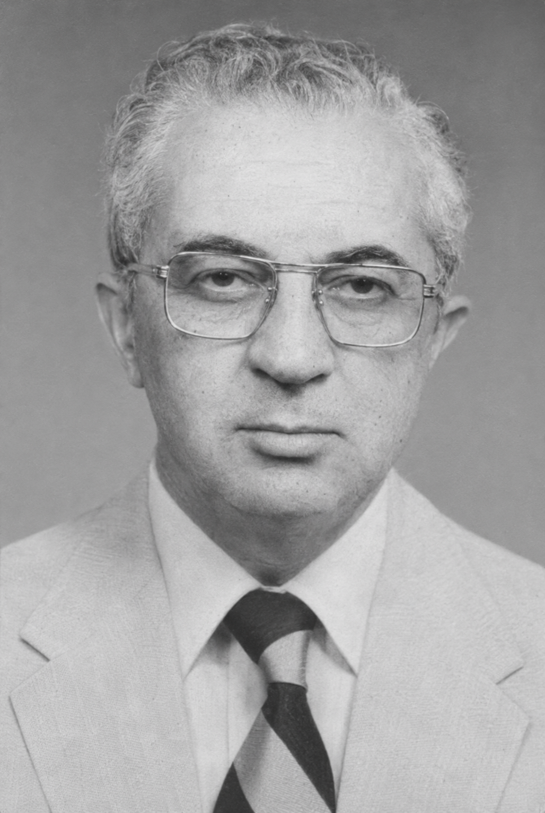
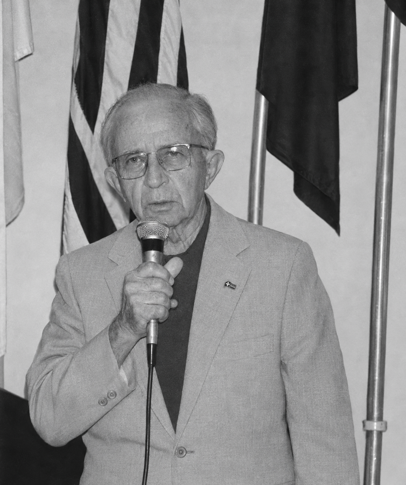

É com especial satisfação que o Rotary Club de Volta Redonda reconhece sua trajetória, sua dedicação e sua contribuição aos ideais rotários.
Você foi selecionada para receber a
COMENDA
Renato Frota Rodrigues de Azevedo
Em reconhecimento à sua história e ao seu compromisso em servir.
Esta homenagem expressa nosso reconhecimento por sua contribuição à história que construímos juntos.
Se desejar guardar uma lembrança deste reconhecimento, a aquisição da peça comemorativa é opcional. Ao adquiri-la, você também contribui para as ações do Rotary e para a luta mundial pela erradicação da poliomielite.
Com estima e reconhecimento,
Renato Frota Rodrigues de Azevedo
Em memória de um dos fundadores do Rotary Club de Volta Redonda.

Renato Frota Rodrigues de Azevedo nasceu em 25 de setembro de 1916, em São Gonçalo do Sapucaí, Minas Gerais, e formou-se pela Escola de Minas e Metalurgia de Ouro Preto em 1940. Após trabalhar na Usina Queiroz Júnior, integrou, em 1941, a Comissão Executiva do Plano Siderúrgico Nacional e participou, nos Estados Unidos, do projeto da futura Usina de Volta Redonda.
Ao retornar ao Brasil, em outubro de 1943, trabalhou na montagem e na operação do Alto Forno número um da CSN. Foi chefe do grupo de Metalurgia e superintendente de Operação da Usina, contribuindo para a construção da cidade. Casou-se com Emmy Dietrich, com quem constituiu família.
A convite de Alexandre Pollastri, do Rotary Club de Barra Mansa, participou da criação do Rotary Club de Volta Redonda, tornando-se associado fundador em 27 de setembro de 1956. Na presidência, em 1958–1959, sob o lema “Ajudem a Moldar o Futuro”, dedicou-se à construção da Escola Rotary, inaugurada em 13 de junho de 1959, no bairro Água Limpa. O livro do cinquentenário a reconhece como o maior projeto das primeiras cinco décadas do clube.

Renato permaneceu no clube até o final da vida. Mesmo dispensado da frequência, continuava prestigiando encontros e mantendo vivo o ideal de servir. Lembrado como um “rotariano ativo e exemplar”, era o último associado fundador ainda pertencente ao clube quando seu falecimento foi registrado, no ano rotário 2013–2014.
A Comenda Renato Frota Rodrigues de Azevedo preserva sua memória e reconhece um legado que une a construção de Volta Redonda à educação, ao companheirismo e ao serviço à comunidade.
Ao adquirir sua comenda, você também apoia a luta pela erradicação da poliomielite no mundo. A maior parte do valor será destinada ao Fundo PolioPlus, com a doação registrada em seu nome.